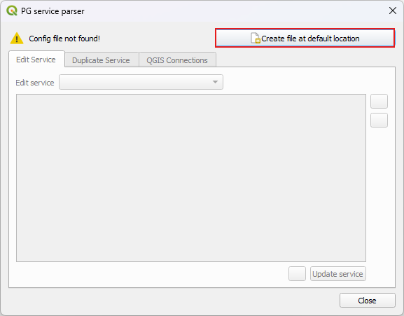

Working with databases can be much easier when working in a multi-user environment or when working in a variety of projects that require more complex data structures.
With QField you can easily work within a database but there are a few steps that need to be taken before the smoothless fieldwork can begin.
This page goes through the different options and gives step-by-step instructions on how this can be achieved.
In QGIS there are two options in which you can connect to your database.
Direct Connection: When connecting to a PostgreSQL database, you can store all information including the credentials inside the QGIS Project directly.
Using a PG Service File: Using a service file that holds the connection parameters to all your databases as an individual service name.
Independently on working with our without QFieldCloud, we highly recommend to make use of this option due to data safety.
You can create a PostgreSQL connection directly inside QGIS.
NOTE: We do not recommend this option due to data safety reasons.
It is not safe to store your database credentials in the QGIS Project File.
Workflow
In your Browser right-click on the PostgreSQL Elephant > New Connection
In the window give your connection a name and add the service information in the dialogue (host, dbname, port, SSL mode)
In the "Authentication section", add a new Authentication if you have not yet connected to your database and saved the credentials.
Test the connection and when successful click ok.
Create a new project on QFieldCloud, choosing the second option to keep the connection to your database.
Configure the layers and the project according to your needs and synchronize with QFieldCloud.
If you have added the access credentials in the "Authentication" section as described above, QField will be able to directly start editing and adding new features.
It is possible to connect to postgreSQL via a service using a service file.
A service is stored inside the pg_service.conf file where all the required information to access your database is stored.
Instead of storing the hostname, port, database name and more into the QGIS Project file, these can be stored separately.
Using services is very useful, when you work with multiple database connections during your everyday work to quickly change and connect to the different instances.
There exists a useful plugin, which supports in the easy creation and configuration of the service file - the PG Service Parser Plugin.
We recommend using this plugin and will show you below how to use it.
Workflow
Desktop Preparation
Direct to Plugins > Manage and Install Plugins
Search for "PG service parser" (icon of the PostgresSQL Elephant) and install it.
Once installed, in the QGIS toolbar, the same icon should appear.
Upon clicking on the icon a new window will appear.
If you never set-up a service file before, the plugin will automatically create a new file in a proper default directory, which ensures QGIS will be able to read it.
Create config file
Click on "Create file at default location" and leave the default name.
Now you can configure the database information which will be stored as a PG service.
Create service
Click on the green plus within the PG service parser plugin
Add the different setting options by clicking on each required option and click "OK"
Edit the database information by double-clicking on the different sections.
Once you are done, click on the Update service button so save the configuration.
Keep the window open, as we will use it in the next section.
Service details
Connection to PostGIS via service
Within the dialog of the PG service parser plugin, go to the QGIS Connections tab.
If needed, select the service you'll use to connect to PostGIS.
Click on the green plus to add a new connection.
Click on "OK" to accept a default connection name or enter your preferred name for the connection, which could contain spaces.
Double click on the new entry displayed and click on the Test Connection button. If successful, click OK.
Note: You can edit connection details to "also list tables with no geometry" or "Use estimated table metadata" to customize your connection.
Once you are done, you can close the plugin dialog.
The new QGIS Connection will appear in your browser, listed under the PostgreSQL item.
If you have connected to PostGIS using the PG Service file and, it is also necessary to add the service file either on your mobile device directly or within QFieldCloud as a "Secret".
If you copy your projects via cable to your device, you will also have to copy the service file to the right directory on your device.
Generally, the QField directory for Android can be found under /Android/data/ch.opengis.qfield/files/QField.
Note
1. Due to the restrictions of Android, you will only be able to access the directory when being connected via cable to the computer.
The only other possible option you have is to set your device to root (not recommended).
2. Unlike on *NIX systems where the file is named .pg_service.conf, the file on Android is named pg_service.conf without a leading dot sign (.).
QFieldCloud support pg_service.conf configurations too.
You need to configure your PostgreSQL layers with "Offline editing" cloud action and store your service settings on QFieldCloud Project's Secrets page.
Under the Systems tab, find the Environment Section, enable the Use custom variables and add the file location to your pg service file as shown in the image below.
It is possible for you to use client certificates to verify the identity while connecting to a PostgreSQL server by defining additional parameters in your pg_service.conf, namely sslcert, sslkey, and sslrootcet.
These parameters must point to valid certificate and key files and placed directly alongside your pg_service.conf file within the QField data folder. For more information on this identification method, refer to the PostgreSQL documentation.
{kind=link}
{kind=link}

{kind=link}